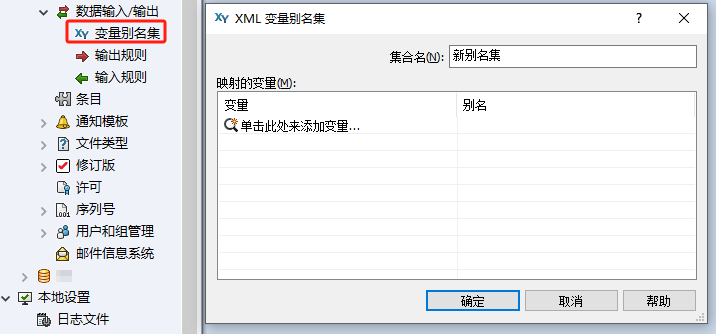
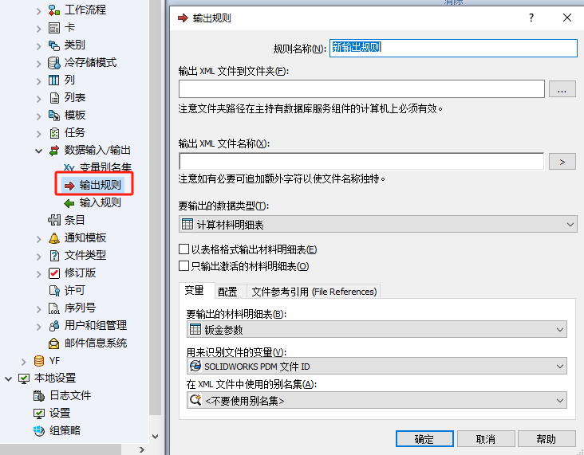
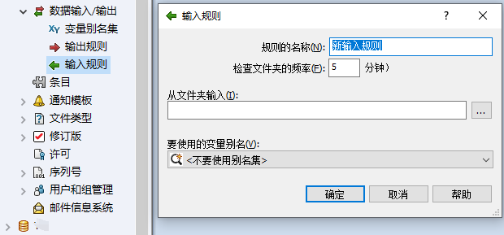

SOLIDWORKS-PDM数据输入输出
使用此对话框，可以定义 XML 文件中的属性和数据卡上的变量之间的映射。
当输出规则生成 XML 文件时，别名集将用备选名称替换数据卡变量名称。 当输入规则运行时，别名集将用数据卡变量名称替换备选名称。 别名集只能用于数据卡变量。 您不能将别名集用于系统定义的变量，如 Configuration 或 Name。
XY变量别名集
输出规则
输出：配置将数据输出到 XML 文件的规则。
输入规则
输入：配置将数据从 XML 文件输入数据的规则。
